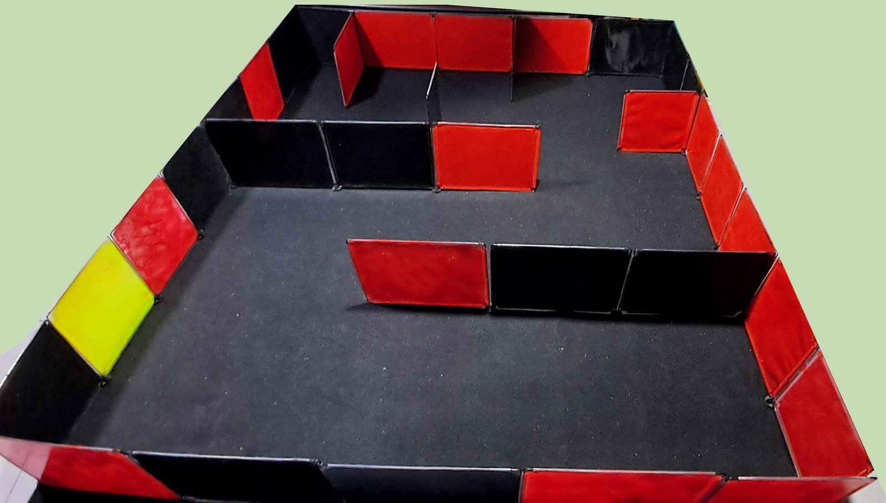
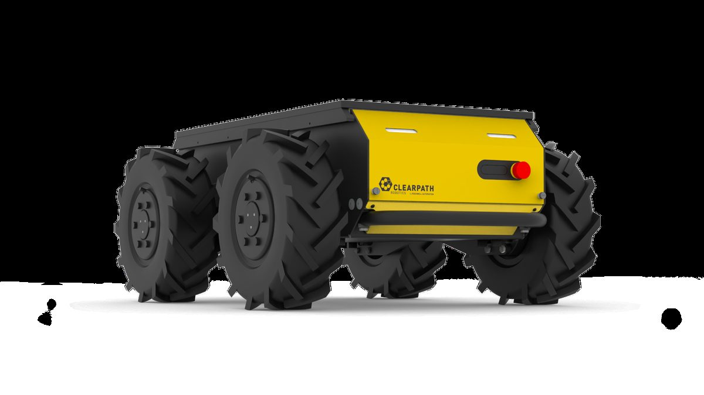
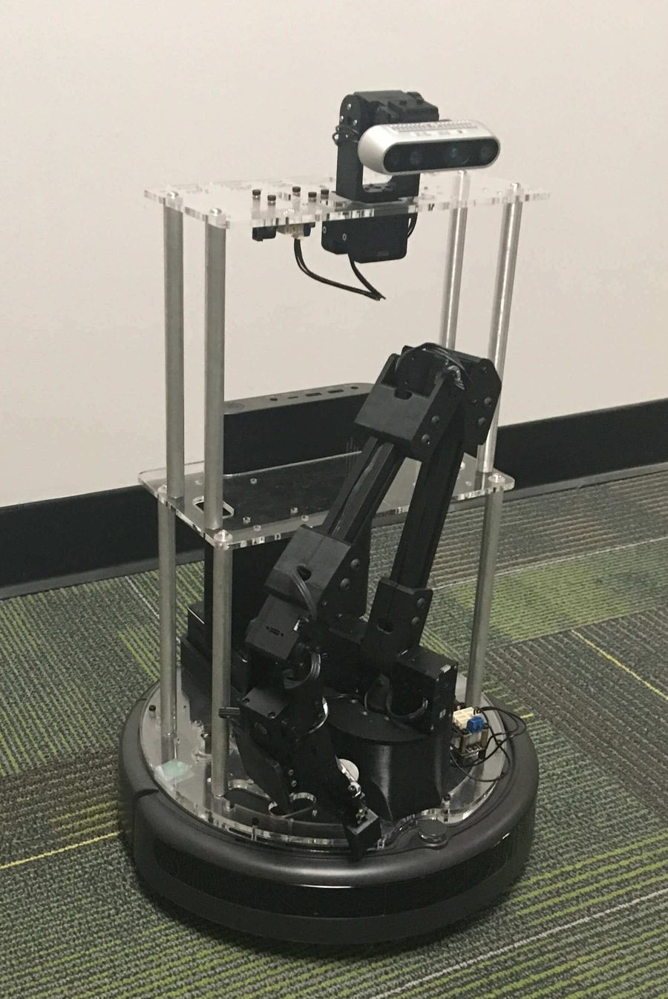

¿Puede un robot hecho con piezas accesibles y software libre entrar a un lugar que no conoce, recorrerlo solo y dibujar su plano? Esa es la pregunta de la tesis. Para responderla primero hay que entender qué significa ser autónomo y qué caminos había disponibles.
NivelLectura

El recinto donde se hicieron todas las pruebas con el robot real. Fotografía del autor, Fig. 5.1 de la tesis.
Percibir, ubicarse, moverse y decidir a la vez
Un robot autónomo de interiores tiene que percibir, saber dónde está, mover sus ruedas con precisión y decidir a dónde ir, todo a la vez. Las piezas de software libre para cada tarea ya existían. Mi desafío fue elegirlas con criterio, integrarlas en un robot de bajo costo y medir qué funcionó y qué no.
4problemas que se resuelven en un mismo ciclo: percibir, estimar, decidir y moverse
2 de 4objetivos específicos cumplidos por completo, y dos en forma parcial
6etapas de trabajo, desde la simulación hasta la documentación
Qué tan autónomo es un robot
La palabra autónomo se usa para máquinas muy distintas. Un robot puede seguir un camino que alguien le trazó, como un tren sobre sus rieles. Otro puede estimar su posición, construir un mapa, planificar su recorrido y reaccionar cuando algo cambia. Lo ilustro con tres casos 1. Un robot logístico que viaja entre estaciones conocidas. Un robot de inspección que recorre una instalación registrando mediciones. Y una plataforma de investigación que entra a un recinto desconocido y genera su mapa mientras avanza.
Este trabajo apunta al tercer caso, que es el más exigente. El robot no recibe un plano ni una lista de destinos. Tiene que descubrir el lugar y decidir por su cuenta hacia dónde seguir. Por eso necesita algo más que moverse bien. Necesita una forma de mapear y ubicarse al mismo tiempo, y una regla para elegir su próximo destino.
La diferencia entre seguir una ruta y explorar es que, al explorar, nadie sabe de antemano cuál es la ruta.
Lo que un robot autónomo resuelve a la vez
Un robot móvil autónomo para interiores necesita resolver cuatro tareas de forma integrada 1. Ninguna funciona sola. Si la estimación de posición falla, el mapa se deforma. Si el mapa se deforma, la ruta pasa por donde hay una pared. Y si las ruedas no siguen la velocidad pedida, la ruta perfecta no sirve de nada.
El ciclo de un robot autónomo
Diagrama
Cada caja tiene su tema en esta guía. El ciclo se repite varias veces por segundo.
PercibirUn láser mide distancias en un plano. Tema 5.
Estimar la posiciónEncoders y SLAM dicen dónde está. Temas 3 y 5.
Planificar y moverseNav2 traza la ruta y cada rueda sigue su velocidad. Temas 6 y 4.
Al moverse, el robot ve geometría nueva y el ciclo vuelve a empezar.
Hay una quinta dificultad que atraviesa a las otras cuatro, y es dónde se calcula cada cosa. El control de los motores necesita respuestas rápidas y regulares, mientras que el mapeo y la planificación necesitan más capacidad de cálculo. Por eso los sistemas robóticos suelen dividirse en componentes que pueden correr en un mismo proceso, en varios procesos o en varios computadores 2. En este robot, lo rápido y crítico va a bordo y lo pesado va en un computador portátil conectado por red.
La solución completa en cuatro dominios: sensado, control de bajo nivel, el computador del robot y la estación de trabajo que mapea, navega y explora. Haz clic para ampliar. Fig. 2.1 de la tesis.
La pregunta y los objetivos
Todo el trabajo se ordena alrededor de una pregunta que puede responderse con evidencia 1.
¿Es posible construir un prototipo de robot diferencial que, usando componentes accesibles y herramientas de código abierto, sea capaz de mapear, navegar y explorar entornos interiores de manera autónoma?
El objetivo general fue diseñar e implementar ese prototipo, basado en ROS 2, capaz de construir un mapa 2D mediante SLAM y de navegar solo hacia destinos generados automáticamente por una estrategia de fronteras. De ahí salen cuatro objetivos específicos, y cada uno tiene un resultado distinto.
OE1Diseñar y construir el robot, verificado antes en un gemelo digital en Gazebo Classic.Cumplido
OE2Implementar el control de bajo nivel: modelo cinemático, odometría por encoders y controlador PID por rueda.Parcial
OE3Implementar la localización, el mapeo 2D y la navegación con SLAM Toolbox y Nav2.Parcial
OE4Integrar exploración por fronteras que genere metas sin intervención manual continua.Cumplido
Dos objetivos quedaron parciales. La ley heredada del firmware opera como un PI y no como el PID pedido, y la navegación funcionó de punta a punta pero sin un indicador cuantitativo propio. Ambos casos se explican con sus datos en La evidencia.
Los límites que se fijaron desde el inicio
Desde el inicio fijé qué no iba a hacer. Este robot opera en interiores con piso plano, usa un único LiDAR 2D y estima su avance con encoders. No usa unidad inercial, cámara ni fusión de sensores, así que su odometría puede degradarse en recorridos largos o con muchos giros. Tampoco está pensado para exteriores, suelos irregulares ni obstáculos que se mueven rápido 1.
Dos ensayos quedaron fuera de forma explícita. Medir la navegación hacia destinos fijos elegidos por una persona, con tasa de éxito y error de posición final, y ubicarse sobre un mapa ya guardado con AMCL. Ambos exigen condiciones que no se configuraron, como un mapa almacenado y puntos de referencia medidos en el recinto.
El estado del arte y cada decisión
Ninguna pieza de este robot es nueva. Mi trabajo fue elegir entre alternativas con costos distintos, y el criterio que repetí fue la integración con ROS 2 y el bajo costo, antes que la máxima capacidad 1. Estas son las decisiones, con las alternativas que descarté y la razón.
Plataforma de software
ROS 2
ROS 1YARPOrocos RTTLCM
Es modular y distribuida, sin un nodo maestro central, y trae un ecosistema completo de mapeo, navegación y exploración 2. YARP, Orocos y LCM resuelven la comunicación o el tiempo real, pero no traen mapeo ni planificación. El fin de soporte de ROS 1 no fue el criterio, porque la versión usada, Foxy, también está fuera de soporte.
Sensor para ver
LiDAR 2D
Cámara de profundidadVisión estéreoLiDAR 3D
Las cámaras entregan más información, pero cargan más el procesamiento y dependen de la luz 5. El LiDAR 3D ve más que un plano a cambio de muchos más datos. En interiores, el SLAM con LiDAR 2D es más económico y es la alternativa predominante 4.
Mapeo
SLAM Toolbox
GMappingHector SLAMCartographer
Se integra de forma nativa con ROS 2, usa un grafo de poses y puede guardar y cargar mapas. GMapping no detecta cierres de lazo, Hector exige un láser de barrido muy rápido y Cartographer es complejo de ajustar y fue el que más CPU usó en una comparación independiente 6. Detalle en Ver y mapear.
Navegación
Nav2 con NavFn y DWB
move_baseAutowareArquitectura propia con OMPL
Nav2 es el marco de navegación de referencia en ROS 2 3. Su búsqueda sobre rejilla y su control reactivo calzan con un mapa de ocupación 2D y cuestan poco cálculo. move_base quedó atado a ROS 1, Autoware apunta a autos autónomos y una arquitectura propia exige mucho más trabajo de integración.
Exploración
Fronteras
Ganancia de informaciónActive SLAM
Ir hacia el borde entre lo conocido y lo desconocido es la idea propuesta por Yamauchi 7. Es simple y se integra directo con el mapa y con Nav2. Los métodos de ganancia de información y el active SLAM deciden con más información, pero exigen modelos y cálculo adicionales 8.
Simulación
Gazebo Classic
Gazebo actualWebotsCoppeliaSimIsaac Sim
Para verificar cinemática, marcos y comunicación basta un simulador de complejidad moderada. Usé Gazebo Classic porque es el que soportan los complementos del paquete base para ROS 2 Foxy en Ubuntu 20.04. Llegó al fin de soporte en enero de 2025 9, y eso se declara como limitación.
Un detalle que confunde a muchos es que el nombre Gazebo designa hoy a dos programas. Gazebo Classic, cuya última versión es la 11, y su sucesor, que se desarrolló como Ignition y hoy se distribuye simplemente como Gazebo 9. Si construyes algo parecido, parte con versiones vigentes, como se sugiere en Constrúyelo tú.
¿Comprar un robot o construirlo?
Para enseñar e investigar con ROS existen plataformas comerciales listas para usar. La más cercana a este proyecto es el TurtleBot 3 Burger, que trae un LiDAR de 360°, una Raspberry Pi 4, un controlador con unidad inercial y motores con encoder integrado 10. Hay otras pensadas para tareas distintas, como bases robustas para terreno exterior o plataformas que suman un brazo para manipular objetos.

Husky A300, una base de investigación para exteriores. Imagen de Clearpath Robotics 11.

LoCoBot, una plataforma que combina navegación y manipulación. Imagen de Interbotix, Trossen Robotics 12.
Frente al Burger, los materiales montados en este robot costaron un 32 % menos, y el proyecto completo un 11 % menos 1. Pero la comparación tiene que leerse completa. El Burger trae unidad inercial y actuadores integrados que este prototipo no tiene, y sus precios son de catálogo, sin envío ni impuestos. El robot propio no ofrece lo mismo por menos. Lo que gana es que cada capa queda documentada y abierta, desde el firmware hasta la exploración. El desglose está en Anatomía del robot.
Qué aporta este trabajo
El firmware del Arduino y la interfaz con ROS 2 los adapté de proyectos de código abierto, y el paquete del robot partió de uno existente 13. Decir el origen de cada pieza deja claro dónde está el trabajo propio.
Lo que se adaptó
El paquete articubot_one, la interfaz diffdrive_arduino y el firmware ROSArduinoBridge, de Josh Newans, y el explorador explore_lite en su versión para ROS 2. Todos se modificaron y configuraron para este robot.
Lo que es propio
La integración completa sobre un robot construido para este fin, la parametrización geométrica compartida por simulación y hardware, la identificación de un modelo de cada rueda con su sintonía por PSO y un programa propio para leer el LiDAR por puerto serie.
Lo que se descubrió
La ley de control llamada PID opera como un PI incremental. Y 53 de las 54 metas abortadas durante la exploración fueron reemplazos hechos por el propio explorador, no fallas del robot.
Esos dos hallazgos son de lo más valioso de la tesis, porque muestran que integrar no es solo conectar piezas. Es entender cómo se comportan juntas. Tienen su desarrollo en Control de velocidad y en Explorar por fronteras.
Cómo se trabajó
Trabajé de forma experimental e iterativa, en seis etapas 1. La idea central fue simular antes de construir, para equivocarse primero en el computador y después en el hardware, y volver atrás cada vez que algo no calza.
Gemelo digitalModelo URDF y pruebas en Gazebo Classic.
HardwareChasis impreso, electrónica e integración con ROS 2.
ControlFirmware, odometría y ganancias de cada rueda.
SLAM y Nav2Mapeo y navegación sobre el robot.
ExploraciónFronteras y métricas en el robot real.
DocumentaciónLa tesis y sus anexos.
En el mundo real
Los niveles de autonomía se ven muy bien en las bodegas de Amazon. Sus primeros robots trabajaban en zonas cerradas, separadas de las personas. Proteus, presentado en 2022, circula entre trabajadores, y para eso combina varios sensores, entre ellos un LiDAR de alta precisión 14. Más autonomía exige más percepción y más cuidado con la seguridad, la misma relación que este robot muestra a pequeña escala.
Hay más casos, desde una mina chilena hasta Marte, en En el mundo real.
Fuentes de este tema
TesisValderas Neculqueo, S. (2026). Navegación y exploración autónoma de interiores utilizando un robot móvil de tracción diferencial. Universidad Tecnológica Metropolitana. Introducción, capítulos 1 y 2, y Anexo 1.2.
ArtículoMacenski, S., Foote, T., Gerkey, B., Lalancette, C. y Woodall, W. (2022). Robot Operating System 2: Design, architecture, and uses in the wild. Science Robotics, 7(66). doi.org/10.1126/scirobotics.abm6074
ArtículoMacenski, S., Moore, T., Lu, D. V., Merzlyakov, A. y Ferguson, M. (2023). From the desks of ROS maintainers: A survey of modern and capable mobile robotics algorithms in the robot operating system 2. Robotics and Autonomous Systems, 168. doi.org/10.1016/j.robot.2023.104493
ArtículoRan, Y., Xu, X., Tan, Z. y Luo, M. (2025). A Review of 2D Lidar SLAM Research. Remote Sensing, 17(7). doi.org/10.3390/rs17071214
ArtículoTourani, A., Bavle, H., Sanchez-Lopez, J. L. y Voos, H. (2022). Visual SLAM: What Are the Current Trends and What to Expect? Sensors, 22(23). doi.org/10.3390/s22239297
ArtículoTrejos, K., Rincón, L., Bolaños, M., Fallas, J. y Marín, L. (2022). 2D SLAM Algorithms Characterization, Calibration, and Comparison. Sensors, 22(18). doi.org/10.3390/s22186903
ArtículoPlaced, J. A. y otros (2023). A Survey on Active Simultaneous Localization and Mapping. IEEE Transactions on Robotics, 39(3). doi.org/10.1109/TRO.2023.3248510
DocumentaciónOpen Source Robotics Foundation (2025). Gazebo Classic, aviso de fin de soporte. classic.gazebosim.org. Y Open Robotics, Gazebo Classic Migration. gazebosim.org